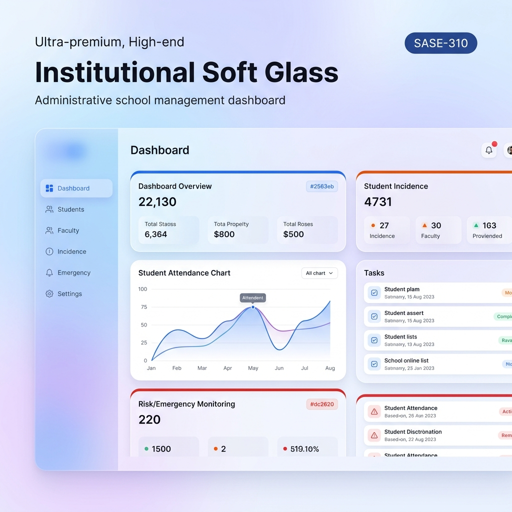

Prototipo de diseño basado en el "Mandato Absoluto" de seriedad administrativa.

Indice general de asistencia registrado para el 1er Grado Grupo A. (Hoy, 2026-04-07)
Incidencias menores registradas en la biblioteca durante la jornada matutina.
Alumnos detectados con patrón de riesgo crítico segun el semáforo institucional.